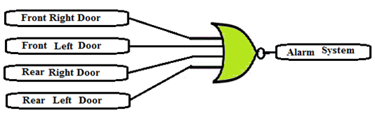
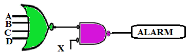
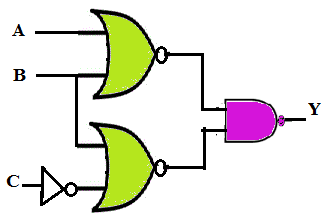

Q1. Consider the digital car- door- lock alarm system which sounds an alarm when receives a logic 1. The alarm will sound under what condition?{Assume: Door open = Logic 0}.

A
Front Right Door is open.
B
Front Left Door is open.
C
All four doors are open.
D
All the above.
Ans is D
Q.2 Refer the application shown below and solve the following questions. [Alarm sounds on receiving a logic HIGH.]

A
Alarm sounds when X = 1.
B
Alarm sounds when X = 0 and A=B=C=D=0.
C
Alarm sounds when X = 1 and A=B=0, C=D=1.
D
All of the above conditions.
Ans is D
Q3. Consider the circuit given below. Analyze the circuit and state the condition for which the output Y = 0.

A
A=B=1, C = 1
B
A=B=1, C = 0
C
A= B = 0, C = 1
D
A=B= X, C= 1
Ans is C
Q4. Simplify the following expression using DeMorgan's theorems: Y = [A(B+C')'D]'
A
Y = A' + B + C' +D
B
Y = A' + B' + C' +D'
C
Y = A' + B + C' +D'
D
Y = A + B + C +D
Ans is C
Q 5. NOR gate is referred to as Universal gate because:
A
NOT gate can be implemented using NOR gate.
B
AND gate can be implemented using ONLY NOR gates.
C
Any logic combinational circuit can be implemented using ONLY NOR gates.
D
All of these.
Ans is D